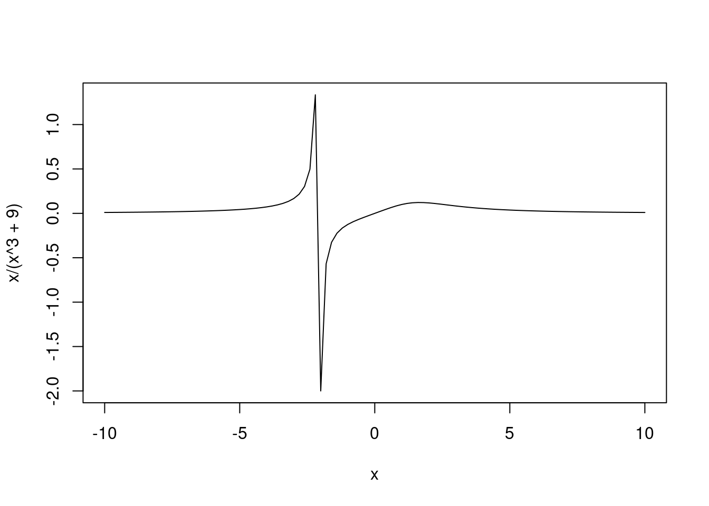

As a final show of good faith, here is what I think R does right. In summary, along with having some great functional programming toys, R has some domain-specific tools that can work excellently when they’re in their element. Whatever the faults of R, it’s always going to be my first choice for some problems.
3.1 Mathematics and Statistics
R wants to be a mathematics and statistics tool. Many of its fundamental design choices support this. For example, vectors are primitive types and R isn’t at all shy about giving you a table or matrix as output. Similarly, the base libraries are packed with maths and stats functions that are usually a good combination of relevant, generic, and helpful. Some examples:
Lots of stats is made easy. Commands like boxplot(data) or quantile(data) just work and there are lots of handy functions like colSums(), table(), cor(), or summary().
R is the language of research-level statistics. If it’s stats, R either has it built-in or has a library for it. It’s impossible to visit a statistics Q&A website and not see R code. For this reason alone, R will never truly die.
The generic functions in the base stats library work magic. Whenever you try to print or summarise a model from there, you’re going to get all of the details that you could ever realistically ask for and you’re going to get them presented in a very helpful way. For example
Call:
lm(formula = mpg ~ wt, data = mtcars)
Residuals:
Min 1Q Median 3Q Max
-4.5432 -2.3647 -0.1252 1.4096 6.8727
Coefficients:
Estimate Std. Error t value Pr(>|t|)
(Intercept) 37.2851 1.8776 19.858 < 2e-16 ***
wt -5.3445 0.5591 -9.559 1.29e-10 ***
---
Signif. codes: 0 '***' 0.001 '**' 0.01 '*' 0.05 '.' 0.1 ' ' 1
Residual standard error: 3.046 on 30 degrees of freedom
Multiple R-squared: 0.7528, Adjusted R-squared: 0.7446
F-statistic: 91.38 on 1 and 30 DF, p-value: 1.294e-10
shows us plenty of useful information and works just as well even if we change to another type of model. Your mileage may vary with packages, but it usually works as expected. Other examples are easy to come by, e.g. plot(model).
The rules for subsetting data, although requiring mastery, are extremely expressive. Coupled with sub-assignment tricks like result[result < 0.5] <- 0, which often do exactly what you think they will, you can really save yourself a lot of work. Being able to demand precisely what parts of your data that you want to see or change is a really great feature.
The factor and ordered data types are definitely the sort of tools that I want to have in a stats language. They’re a bit unpredictable, but they’re great when they work.
It’s no surprise that an R terminal has fully replaced my OS’s built-in calculator. It’s my first choice for any arithmetical task. When checking a gaming problem, I once opened R and used (0.2 * seq(1000, 1300, 50) + 999) / seq(1000, 1300, 50). That would’ve been several lines in many other languages. Furthermore, a general-purpose language that was capable of the same would’ve had a call to something long-winded like math.vec.seq() rather than just seq(). I find the cumulative functions, e.g. cumsum() and cummax(), similarly enjoyable.
How many other language have matrix algebra fully built-in? Solving systems of linear equations is just solve().
The rep() function is outstandingly versatile. I’d give examples, but those found in its documentation are more than sufficient. Open up R and run example(rep) if you want to see them. If tricks like cbind(rep(1:6, each = 6), rep(1:6, times = 6)) have yet to become second nature, then you’re really missing out.
On top of replacing your computer’s calculator, R can replace your graphing calculator as well. Unless you need to tinker with the axes or stop the asymptotes causing you problems – problems that your graphing calculator would give you anyway – functions like curve(x / (x^3 + 9), -10, 10) (output below) do exactly what you would expect and exactly how.

3.2 Names and Data Frames
These seem like trivial features, but the language’s deep integration of them is extremely beneficial for manipulating and presenting your data. They assist subsetting, variable creation, plotting, printing, and even metaprogramming.
The ability to name the components of vectors, e.g. c(Fizz=3, Buzz=5), is a nice trick for toy programs. The same syntax is used to much greater effect with lists, data frames, and S4 objects. However, it’s good to show how far you can get with even the most basic case. Here’s my submission for a General FizzBuzz task:
namedGenFizzBuzz <-function(n, namedNums){ factors <-sort(namedNums)#Required by the task: We must go from least factor to greatest.for(i in1:n) { isFactor <- i %% factors ==0print(if(any(isFactor)) paste0(names(factors)[isFactor], collapse ="") else i) }}namedNums <-c(Fizz=3, Buzz=5, Baxx=7)#Notice that we can name our inputs without a function call.namedGenFizzBuzz(105, namedNums)
I’ve little doubt that an R guru could improve this, but the amount of expressiveness in each line is already impressive. A lot of that is owed to R’s love for names.
Having a tabular data type in your base library – the data frame – is very handy for when you want a nice way to present your results without having to bother importing anything. Due to this and the aforementioned ability to name vectors, my output in coding challenges often looks nicer than most other people’s.
I like how data frames are constructed. Even if you don’t know any R at all, it’s pretty obvious what data.frame(who = c("Alice", "Bob"), height = c(1.2, 2.3)) produces and what adding the row.names = c("1st subject", "2nd subject") argument would do.
As a non-trivial example of how far these features can get you, I’ve had some good fun making alists out of syntactically valid expressions and using only those alists to build a data frame where both the expressions and their evaluated values are shown:
(stolen from my submission here). Did you notice that the output knew the names of x and p without being told them? Did you also notice that a similar thing happened in after our call to curve() earlier on? Finally, did you notice how easy it was to get such neat output?
corrplot: It has less than ten functions, but it only needed one to blow my mind. Once you’ve even as much as read the introduction, you will never try to read a correlation matrix again.
ggplot2: I’m not experienced enough to know what faults it has, but it’s fun to use. That single fact makes it blow any other graphing software that I’ve used out of the water: It’s fun.
magrittr: It sold me on pipes. I’d say that any package that makes you consider changing your programming style is automatically outstanding. However, the real reason why I love it is because whenever I’ve run bigLongExpression() in my console and decided that I really wanted foo() of it, it’s so much easier to press the up arrow and type CTRL+SHIFT+M+“foo” than it is to do anything that results in foo(bigLongExpression()) appearing. Maybe there’s a keyboard shortcut that I never learned, but this isn’t the only reason why I love magrittr. I’ll say more about it much later.
R Markdown has served me well in writing this document. It’s buggier than I’d like, rarely has helpful error messages, and does things that I can’t explain or fix even after setting a bounty on Stack Overflow, but it’s still a great way to make a document from R. It’s the closest thing that I know of to an R user’s LaTeX. I had to wait on this bug fix before I could start numbering my sections. Hopefully it didn’t break anything.
The vector recycling rules are powerful when mastered. Expressions like c("x", "y")[rep(c(1, 2), times = 4)] let you do a lot with only a little work. My favourite ever FizzBuzz could well be
I wish that I could claim credit for that, but I stole it from an old version of this page and improved it a little.
Basically everything is a vector, so R comes with some great vector-manipulation tools like ifelse() (seen above) and makes it very easy to use a function on a collection. Can you believe that mtcars / 20 actually works?
Tricks like array / seq_along(array) save a lot of loop writing.
Even simple things like being able to subtract a vector from a constant (e.g. 10 - 1:5) and get a sensible result are a gift when doing mathematics.
Vectorization of functions is sometimes very useful, particularly when it lets you do what should’ve been two loops worth of work in one line. You’d be amazed by how often you can get away with calling foo(1:100) without needing to vectorize foo() yourself.
3.5 Functional Programming
R’s done a good job of harnessing the power of functional languages while maintaining a C-like syntax. It makes no secret of being inspired by Scheme and has reaped many of its benefits.
3.5.1 First-class Functions
It’s impossible to not notice that functions are first-class in R. You’re almost forced to learn functional programming idioms like mapping functions, higher-order functions, and anonymous functions. This is a good thing. Where else do you find a language with enough useful higher-order functions for the community to be able to discourage new users from writing loops? Some examples:
All of the functional programming toys that you could want are easily found in R, e.g. closures, anonymous functions, and higher-order functions like Map(), Filter(), and Reduce(). Once you’re used to them, you can write some very expressive code.
The apply family of functions is basically a set of DSL mapping functions for stats. Both apply() and tapply() can produce some very concise code, as can related functions like by().
Where else can you write functions that are both anonymous and recursive? Not that you should, of course.
First-class functions sometimes interact with R’s vectorization obsession in a very entertaining way. In how many other languages do you see somebody take a list of functions and, in a single line, call them all with a vector as a single argument to each function? Code like lapply(listOfFuns, function(f) f(1:10)) is entirely valid. It calls each function in listOfFuns with the entire vector 1:10 as their first argument.
Code like Vectorize(foo)(1:100) is not particularly hard to understand, but I’d struggle to name another language that lets me do the same thing with so much ease.
3.5.2 First-class Environments
Not only are functions first-class in R, environments are too. You therefore have lots of control over what environment an expression is evaluated in. This is an amazing source of power that tends to scare off beginners, but I cannot overstate how much of an asset it can be. If you’re not familiar with the below, look it up. You will not regret it.
Because R’s environments are first-class, functions like with() and within() can generate them on the fly. I’ve seen this called “data masking”. Advanced R has a whole chapter on it. It lets you do things like “treat this list of functions as if it were a namespace, so I can write code that uses function names that I wouldn’t dare use elsewhere”. This can also be used with data. For example, tapply(mtcars$mpg, list(mtcars$cyl, mtcars$gear), mean) uses mtcars far too many times, but with(mtcars, tapply(mpg, list(cyl, gear), mean)) gives us an easy fix. Ad-hoc namespaces are an amazing thing to have, particularly when using functions that don’t have a data argument (e.g. plot()).
Modelling functions like lm() use the data-masking facilities that I’ve just described, as do handy functions like subset(). This saves incredible amounts of typing and massively increases the readability of your stats code. For example, aggregate(mpg ~ cyl + gear, mtcars, mean) returns very similar output to my above calls to tapply() without needing the complexity of using with(). It also allows for ridiculously concise code like aggregate(. ~ cyl + gear, mtcars, mean).
You can write your own data-masking functions. Doing so relies on controlling the non-standard evaluation of some of your arguments and is the closest thing that R has to metaprogramming. The names mechanisms do a lot to remove any ambiguity from your attempts at this. Stealing an example from the documentation, do I even need to explain what transform(airquality, new = -Ozone, Temp = (Temp-32)/1.8) does? Being able to do all of that in one line is outstanding. Without R allowing developers to add new functions like this, the Tidyverse would’ve been impossible.
You might have spotted a pattern by now. R often lets you do very much with very little.
3.5.3 Generic Functions
Generic function OO is pretty nice to have, even if I wouldn’t use anything more complicated than S3. Being able to call foo(whatever) and be confident that it’s going to do what I mean is always nice. Some positives of R’s approach are:
As mentioned earlier on, S3 is used excellently in the base R stats library. Functions like print(), plot(), and summary() almost always tell me everything that I wanted to know and tell me them with great clarity.
When you’re not trapped by the technicalities, S3 is an outstandingly simple tool that does exactly what R needs it to do. Have a look at all of the methods that the pre-loaded libraries define for plot()
because a statistician often only need to dispatch on the type of model being used, S3 is the perfect tool to make functions like plot() easy to extend, meaning that it’s easy to make it give your users exactly what they want. This isn’t just theoretical either. The output for methods(plot) gets a lot longer if I go through my list of packages and start loading some random number of them. Go try it yourself!
S3 generics and objects are very easy to write. The trade-off is that they don’t do anything to protect you from yourself. However, being able to tell R to shut up and do what I want it to a nice part of S3.
I like the idea of S3’s group generics, but I don’t like not being able to make my own. However, I think that you can do it for S4.
I have it on good authority that biology people often need to dispatch on more than one type of model at a time. This means that they shower the S4 object system with greater praise than what I’ve just given S3. Apparently, the bioconductor package is the outstanding example of their love of it.
S4 has multiple inheritance and multiple dispatch. I’m not going to say that multiple inheritance is a good thing, but it’s not always found in other OOP systems.
RC and the R6 package are about as close as you’re ever going to get to having Java-like OOP in a mostly function language.
The for loop syntax is always the same: for(element in vector){...}. This means that there is no difference between the typical “do n times” case like for(i in 1:n) and the “for every member of this collection” case like for(v in sample(20)). I appreciate the consistency.
The ... notation has a very nice “do what I mean” feel, particularly when you’re playing around with anonymous functions.
Because of repeat loops, you never need to write while(TRUE).
Although I have major issues with them, the rules for accessing elements sometimes give nice results. For example array[c(i, j)] <- array[c(j, i)] swaps elements i and j in a very clean way.
It’s nice to be able to do many variable assignments in one line e.g. Alice <- Bob <- "Married". The best examples are when you do something like lastElement <- output[lastIndex <- lastIndex + 1] <- foo, letting you avoid having to do anything twice.
The syntax for manipulating environments makes sense. You have to learn the difference between <- and <<- , but having environments use a subset of the list syntax was a very good idea. It was a similarly good idea to have a lot of R’s internals (e.g. quoted function calls) be pairlists. This lets them be manipulated in exactly the same way as lists. The similarities between lists, pairlists, environments, and data frames go deeper than you may expect. For example, the eval() function lets you evaluate an expression in the specified environment, but it’s happy to take any of the data types that I’ve just listed in place of an environment. At times, R almost lets you forget that lists and environments aren’t the same thing.
The function names for making and manipulating S4 objects and functions are generally what you would expect them to be. For example, once you know setClass() and setGeneric(), you can probably guess what the corresponding function for methods is called.
3.7 Miscellaneous Positives
The built-in vectors letters and LETTERS come in handy surprisingly often. You’ll see me use them a lot.
The base library surprises me from time to time. It’s always worth putting what you want in to a search engine; Sometimes, you’ll find it. My most recent surprises were findInterval() and cut().
The na.print argument to print(), trivial as it is, can be a thing of beauty.
R’s condition handling and recovery system is build atop S3, making it extremely customisable by letting you add and handle custom metadata pretty much however you want. It also has some nice built-in types of conditions like errors, warnings, and messages, as well as having finally blocks in tryCatch(). The only real oddity of the system is that its conditionals are treated as functions of the error, meaning that you will have to write strange code like tryCatch(code, error = function(unused) "error", warning = function(unused) "warning"). However, this is the price that you pay for being able to use code like tryCatch(code, myError = function(e) paste0(e$message, " was triggered by ",e$call,". Try ",e$suggestion). As a final point of interest, I’ve heard that R’s condition handling system is one of the best copies of Common Lisp’s, which I’ve heard awesome things about.
Speaking of Lisp, statistical Lisps used to be a thing. I’ve heard rumours of them still being used in Japan, but I can’t find anything to back that up. Everything that I’ve found says that R killed them off. As far as I know, nobody’s tried to make another such Lisp since the 90’s. The fact that R can claim to have eradicated an entire category of language design is a great point in its favour. It’s also possible evidence that I’m correct to say that R resembling C is to its benefit. However, I’d be overjoyed to hear of such Lisps making a comeback. Imagine if we’re just one good Clojure library away from R surrendering to its Scheme roots and birthing a modern statistical Lisp.
Base R is quite stable. Breaking changes are almost unheard of. I don’t agree that they should be trying so hard to maintain compatibility with S, but this is an undeniable benefit of that decision.
The fact that the Tidyverse is just an R library, rather than an entirely separate language, is a testament to R’s metaprograming. I like being able to define new infix operators and replacement functions, but the Tidyverse went above and beyond. Where else do you see an entire library of pipes? Until very recently, base R didn’t even have pipes!
The Tidyverse is proof that people are trying to fix R. Although that comes with the implication that R is broken, the fact that people are both willing and able to fix it definitely says something nice about R.
I generally like the RStudio IDE. When Emacs is the only alternative that anyone takes seriously, you know that you’ve done a good job.
There is only one implementation of R that anyone’s ever heard of, so you never need to worry about undefined behaviour.
There’s something hilarious about R being a language where dangerous forbidden techniques actually run. In most other languages, comments that read # FORBIDDEN would indicate that the code produces some sort of error. Not R.